11Dateien
Alles liegt füreuch bereit.
Was für den Entwurf neu entstanden ist, liegt hier sortiert in sechs Ordnern. Ihr könnt jede Datei ansehen und herunterladen.
01Unterlagen
Eure Karten im neuen Satz, jede als PDF.
02Drucksachen
Von der Karte am Platz bis zur Einladung für Stammgäste.
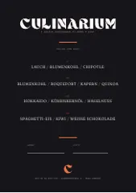
Die Karte am Platz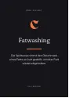
Drink-Kärtchen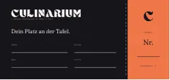
Ticket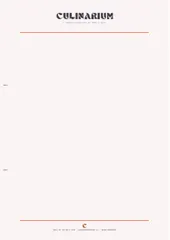
Briefpapier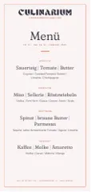
Menükarte des Abends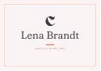
Platzkarte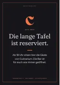
Die Tafel ist reserviert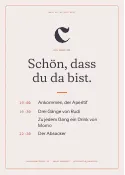
Willkommen am Platz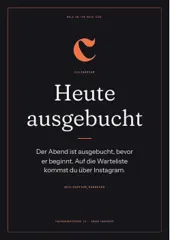
Heute ausgebucht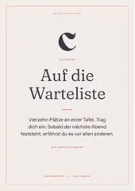
Auf die Warteliste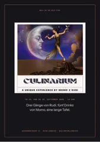
Plakat zum Aushang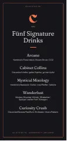
Die fünf Drinks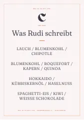
Rudis Zeilen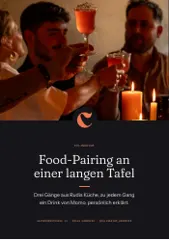
Flyer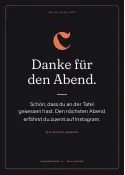
Danke für den Abend- Allergien am Platz
- Visitenkarte
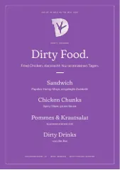
Dirty Chicken: die Karte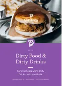
Dirty Chicken: Flyer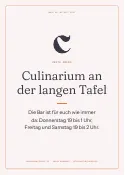
Heute Abend an der Theke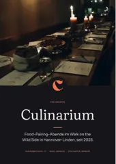
Pressemappe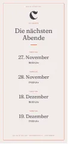
Die nächsten Abende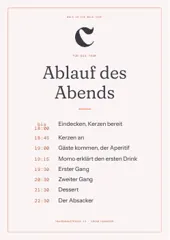
Ablauf für das Team- Einladung an Stammgäste
03Untersetzer
Der Druckbogen mit Schnittlinien, jedes Stück einzeln und alle als Bild.
04Zeichen
Rudis Original-Logo als Zeichnung, die in jeder Größe scharf bleibt.
05Ansichten der neuen Website
Jede Seite des Entwurfs als Bild, am Rechner und am Handy.
06Instagram
Die 60 Beiträge in voller Größe, das Profilbild und die Texte dazu.

07Sticker
Vierzig Sticker: der Druckbogen mit Schnittlinien, jeder einzeln und alle als Bild.
08Beigaben
Menü-Rolle, Streichholzbriefchen, Drink-Fähnchen, Rezeptkarte und Gutschein, jede als PDF.
09Postkarten
15 Postkarten, eine zu jedem Plakat: mit Beschnitt für die Druckerei und als Sammelbogen SRA3.
Fehlt euch eine Datei oder ein Format, lege ich sie gern dazu.